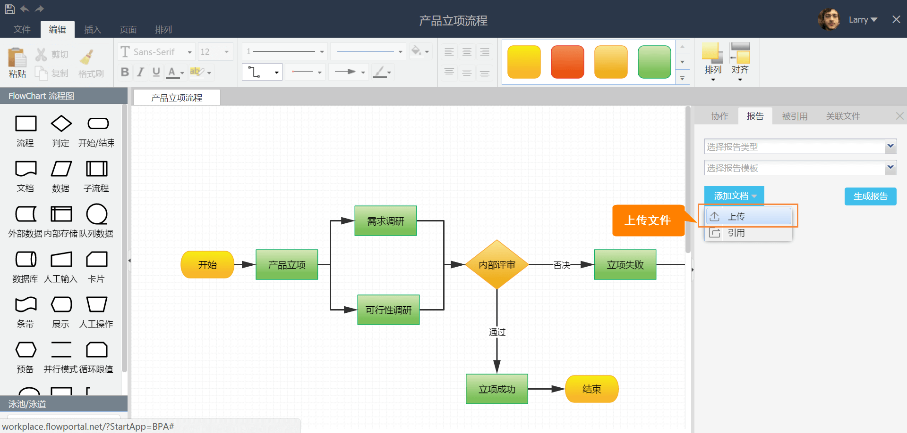
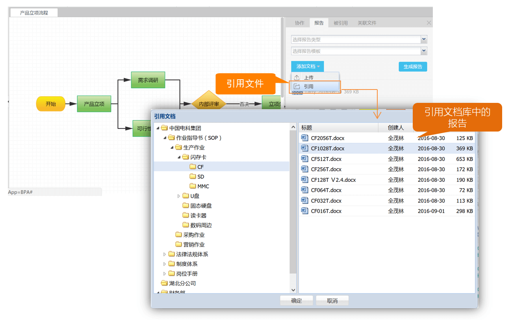

6.3 添加现有报告
FlowPortal BPA添加现有报告功能，可以帮助您很方便地添加现有的文档资源，避免重复工作，提升工作效率。
我们提供了上传附件和引用文档库中的报告2种方法。
上传附件
如下图所示，点击【添加文档】按钮，选择【上传】，即可将本地文档上传至系统。

引用文档库中的报告
如下图所示，点击【添加文档】按钮，选择【引用】，即可将文档库中的报告添加到流程报告中。

当文档需要更新时，您只需更新文档库中的报告，引用在流程报告中的文档就能实现自动更新，极大地提升了工作效率。
Created with the Personal Edition of HelpNDoc: Easy CHM and documentation editor